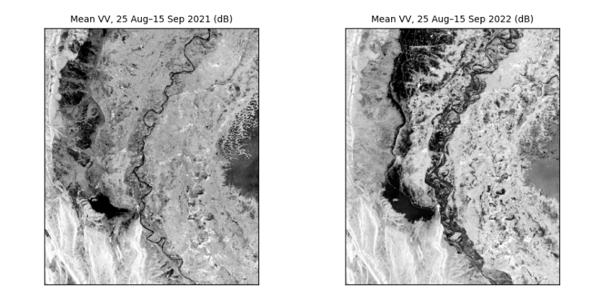
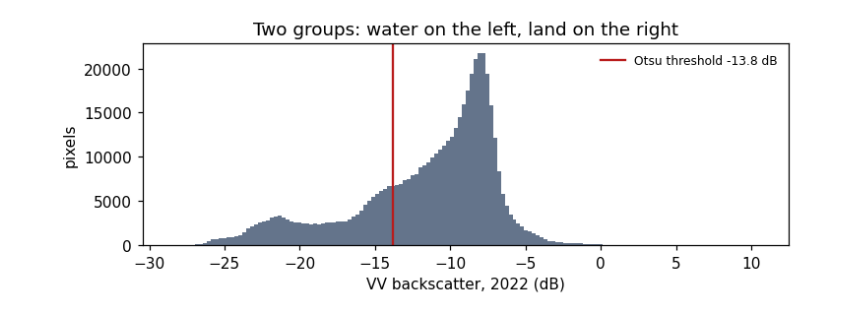
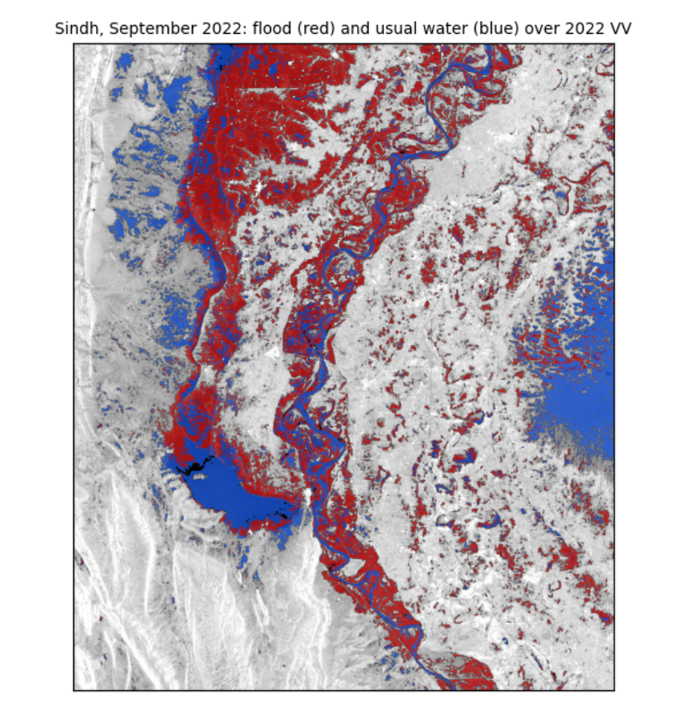

4. Mapping a flood: Sindh, 2022¶
4.1 Two dates, one question¶
In August and September 2022 extreme monsoon rain flooded a third of Pakistan. Cloud hid the ground from optical satellites for weeks; radar kept seeing. Floodwater is smooth, so it turns dark. The method: take the mean VV of the same weeks in a normal year (2021) and in the flood year (2022), find a threshold that separates dark water from land, and call a pixel flooded if it is darker than the threshold in 2022, was not in 2021, and is not normally water.
with rasterio.open(DATA / "sindh_flood_200m.tif") as src:
pre, post, occurrence = src.read()
pixel_km2 = abs(src.res[0] * src.res[1]) / 1e6
print(f"grid {pre.shape}, pixel {src.res[0]:.0f} m = {pixel_km2:.2f} km²; mapped area {np.isfinite(post).sum() * pixel_km2:,.0f} km²")
fig, axes = plt.subplots(1, 2, figsize=(9, 4))
show(pre, axes[0], "Mean VV, 25 Aug–15 Sep 2021 (dB)")
show(post, axes[1], "Mean VV, 25 Aug–15 Sep 2022 (dB)")
plt.tight_layout(); plt.show()
grid (781, 653), pixel 200 m = 0.04 km²; mapped area 20,400 km²

How to read the two images. Same area, same weeks of the year, same stretch. Dark is smooth: in 2021 the dark areas are the Indus and Manchar Lake; in 2022 large new dark areas spread across the plains west of the river. The difference between the panels is the flood.
4.2 Choosing the threshold from the data¶
In the 2022 image the pixels form two groups, water (dark) and land (brighter). Otsu's method tries every possible threshold t and keeps the one that makes the two groups most distinct, by maximising the between-group variance:
where w₀ and w₁ are the shares of pixels below and above t, and μ₀ and μ₁ their means.
def otsu(values, bins=256):
v = values[np.isfinite(values)]
count, edges = np.histogram(v, bins=bins)
mids = (edges[:-1] + edges[1:]) / 2
w0 = np.cumsum(count) / count.sum() # share below each candidate threshold
m0 = np.cumsum(count * mids) / count.sum() # running sum of the means
mean_all = m0[-1]
between = (mean_all * w0 - m0) ** 2 / (w0 * (1 - w0) + 1e-12)
return float(mids[np.argmax(between)])
t = otsu(post)
stats_s = json.loads((DATA / "sindh_stats.json").read_text())
print(f"Otsu threshold on this 200 m grid: {t:.1f} dB (the manual, on the 100 m grid: {stats_s['threshold']} dB)")
fig, ax = plt.subplots(figsize=(7, 2.8))
ax.hist(post[np.isfinite(post)], bins=150, color="#64748b")
ax.axvline(t, color="#b91c1c", lw=1.5, label=f"Otsu threshold {t:.1f} dB")
ax.set(xlabel="VV backscatter, 2022 (dB)", ylabel="pixels", title="Two groups: water on the left, land on the right")
ax.legend(frameon=False, fontsize=8); plt.tight_layout(); plt.show()
Otsu threshold on this 200 m grid: -13.8 dB (the manual, on the 100 m grid: -14.1 dB)

How to read the histogram. x: backscatter in dB; y: how many pixels have that value. Two humps: a smaller one on the left (dark, smooth: water) and a larger one on the right (land). The red line is the threshold Otsu's method chose, in the valley between them. It differs slightly from the manual's because coarser pixels mix water and land at the edges and shift the humps; that difference is a first hint of how uncertain the flood area is.
4.3 From threshold to flood map and area¶
A pixel is flooded if it is below the threshold in 2022, was above it in 2021, and is water less than 50% of the time in the JRC Global Surface Water record (so permanent rivers and lakes are excluded).
water22, water21 = post < t, pre < t
permanent = occurrence >= 50
flood = water22 & ~water21 & ~permanent
area = flood.sum() * pixel_km2
print(f"flooded: {area:,.0f} km² (the manual on 100 m pixels: {stats_s['floodKm']:,} km²; the difference comes from the coarser pixels)")
print(f"water already there in 2021: {(water21 & water22).sum() * pixel_km2:,.0f} km²; permanent water: {permanent.sum() * pixel_km2:,.0f} km²")
for dt in (-1.0, +1.0):
alt = (post < t + dt) & ~(pre < t + dt) & ~permanent
print(f"threshold {t + dt:.1f} dB -> {alt.sum() * pixel_km2:,.0f} km² ({100 * (alt.sum() * pixel_km2 / area - 1):+.0f}%)")
fig, ax = plt.subplots(figsize=(7, 5.6))
show(post, ax, "Sindh, September 2022: flood (red) and usual water (blue) over 2022 VV")
over = np.zeros((*post.shape, 4))
over[flood] = [0.85, 0.1, 0.1, 0.75]; over[water21 & water22] = [0.1, 0.35, 0.9, 0.75]
ax.imshow(over); plt.tight_layout(); plt.show()
flooded: 3,283 km² (the manual on 100 m pixels: 3,458 km²; the difference comes from the coarser pixels)
water already there in 2021: 2,102 km²; permanent water: 324 km²
threshold -14.8 dB -> 3,148 km² (-4%)
threshold -12.8 dB -> 3,278 km² (-0%)

How to read the map. The grey background is the 2022 radar image. Red pixels met all three flood rules: new water in 2022. Blue pixels were water in both years. The red areas spread west of the Indus around Manchar Lake and across the plains of Dadu district, which matches reported flooding there.
What the numbers say. The flooded area is a few thousand km², close to the manual's estimate on finer pixels. Moving the threshold by 1 dB changes the area by only a few percent, and not symmetrically. That is because the rule uses the same threshold for both years: raising it adds water in 2022, but also in 2021, which is then excluded, so the two changes partly cancel. Report the area with this range; it is the honest uncertainty of a threshold method, and it leaves out the larger errors listed next.
What they do not say. Radar misses water under trees and between buildings (the beam does not reach it), can mistake smooth sand or tarmac for water, and sees only the dates it passed over. Pixels are not independent, so area counts are not "samples" for statistical tests (see the guide Hypothesis testing with climate data).
4.4 What you have learned¶
You opened georeferenced radar images and read their size, grid and coordinates; converted between dB and linear units and saw why averaging must be done in linear units; measured speckle and how averaging reduces it; used two polarisations to tell water, vegetation and buildings apart; chose a threshold from the data with Otsu's method; and mapped a flood with an area and its uncertainty.